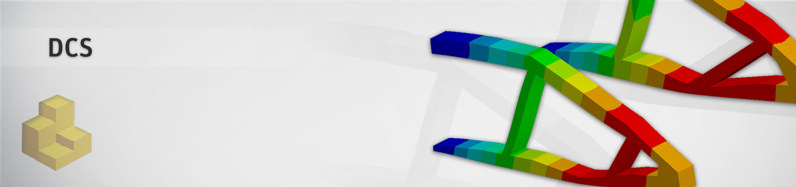

Ansys DCS Python Client#
Ansys Distributed Compute Services (DCS) is a family of applications that enables you to distribute, manage and solve simulations on a variety of compute resources. As part of this, design point services (DPS) facilitates the robust solution of tens of thousands of design points spread across clusters, networks and operating systems.
ansys-dcs-client brings Ansys DCS to your Python application. Wrapping around the DCS REST APIs, it allows you to:
create new projects and modify existing ones
monitor and manage design points
run your own design exploration algorithms
retrieve simulation results
User Guide#
- Installation
- Quickstart
- Connect to a DCS Server
- Create a demo project: the MAPDL motorbike frame example
- Query parameters
- Objects vs dictionaries
- Set failed design points to pending
- Modify a project job_definition
- Delete some design points
- Query the number of evaluators
- Replace a file in a project
- Modify and create users
- Exception handling
- Examples
- Code Documentation
- Changelog